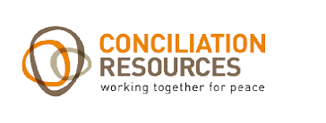
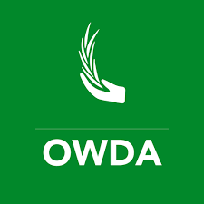
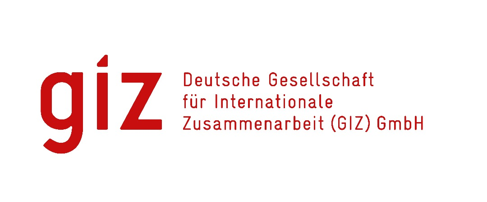
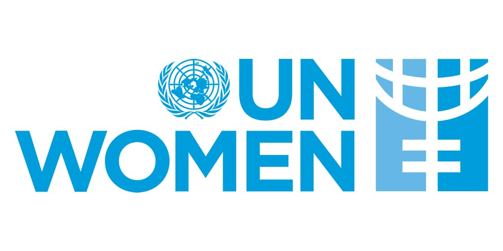
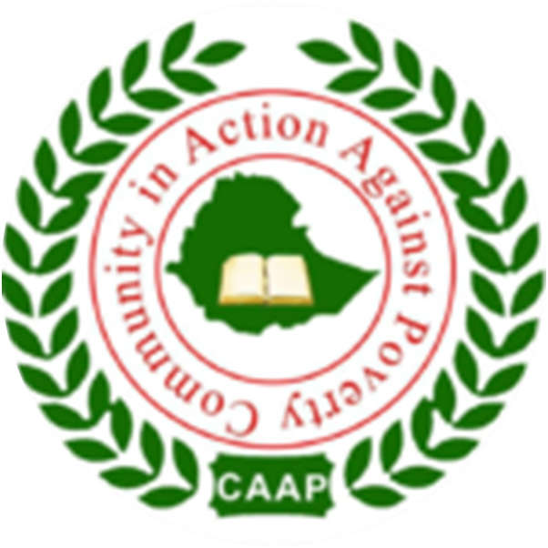
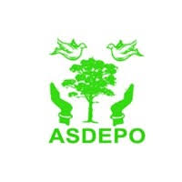

Projects & Studies
A comprehensive record of SIRAD Institute's field research, assessments, and consultancy engagements across the Somali Region of Ethiopia and beyond.
Research Projects & Consultancies
Evidence-based studies supporting peace, development, and humanitarian action in the Horn of Africa.
Conducted a study "Communicating with communities on the protection of sexual exploitation and abuse for IDPs and drought-affected communities in the Somali region." The research has been published.
Crop mapping and livelihood assessment in Fafen zone, Somali Region and Ethiopia.
Conducted a labor market assessment in Jigjiga and Gode of the Somali Region of Ethiopia.
A study on "Stakeholder mapping analysis for peace promotion and social cohesion in Moyale town," funded by a UK-based organization.
Development of a web-based Project Information Management System — a suite of project management tools optimized for tracking — for the Somali Regional Water Resource Bureau, Ethiopia.
SIRAD conducts capacity gap analysis and is actively engaged in capacity-building efforts and regional stability initiatives, focusing on inter-party dialogue approaches.
Field study on the formation structure of the Council for Peace and Unity in Moyale to enhance social cohesion and strengthen the council's role in fostering peaceful coexistence between Oromo and Somali communities.
SUIDAC Feasibility Studies — Jigjiga City: SIRAD conducted feasibility studies on the Sustainable Urban Integration for Displacement-Affected Communities (SUIDAC) project in Jigjiga City Administration. This initiative is funded by UNOPS and Cities Alliance through OWDA and aims to improve urban integration, service access, and livelihoods for displaced and host communities.
In these feasibility studies, SIRAD conducted and developed the following for UNOPS and Cities Alliance through OWDA:
- Need assessment for all services (Protection, WASH, Health & Nutrition, HLP, Education, Livelihoods) for IDPs, refugees, and host communities
- Perception Survey
- Conflict analysis
- Gender analysis
- Environmental analysis
- Risk analysis
- Stakeholder engagement analysis
- SUIDAC Technical Working Group (TWG) development
- Communication strategy
- Project development including budget, log frame, and M&E
Technical and contextual assessment on Water for Livestock and Agriculture – Access and Sustainability in Awbare and Lafaciise woredas, which border Somaliland.
Communities' participatory land use planning (PLUP) study in Kebribayah Woreda, particularly in Dhurwale.
Developed Safety and Security Guidelines for OWDA and conducted capacity-building for OWDA staff on safety and security risk management.
Developed a Business Development Plan for the Barey Woreda Water Supply Utility and facilitated the establishment of the Barey Water Utility Board.
Conducted a Gender Analysis to support scaling up humanitarian interventions and strengthen local disaster resilience through an integrated approach in Moyale Hudet Woreda, Dawa Zone.
Conducted a Baseline Assessment on Peacebuilding and Conflict Prevention in the Dikhil Cluster, Togowachale Sub-Cluster, in collaboration with IGAD.
Conducted a study on Promoting Alternatives to Youth Violence and Health Promotion in the border areas of Oromia and Somali Regions, focusing on Jigjiga and Babilie.
SIRAD's Key Partners
SIRAD partners with and conducts assessments and studies for the following leading organisations.







Commission a Study with SIRAD
Looking to generate evidence for your programme or policy? Our multidisciplinary team delivers rigorous, context-sensitive research across the Horn of Africa.
Get in Touch